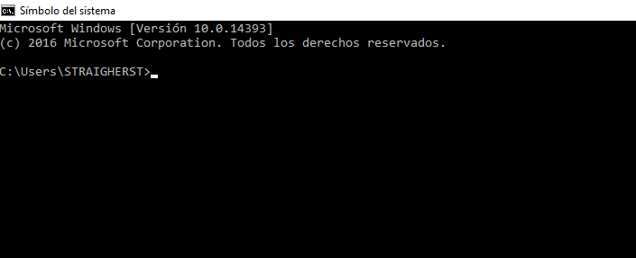
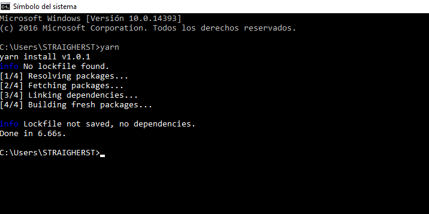
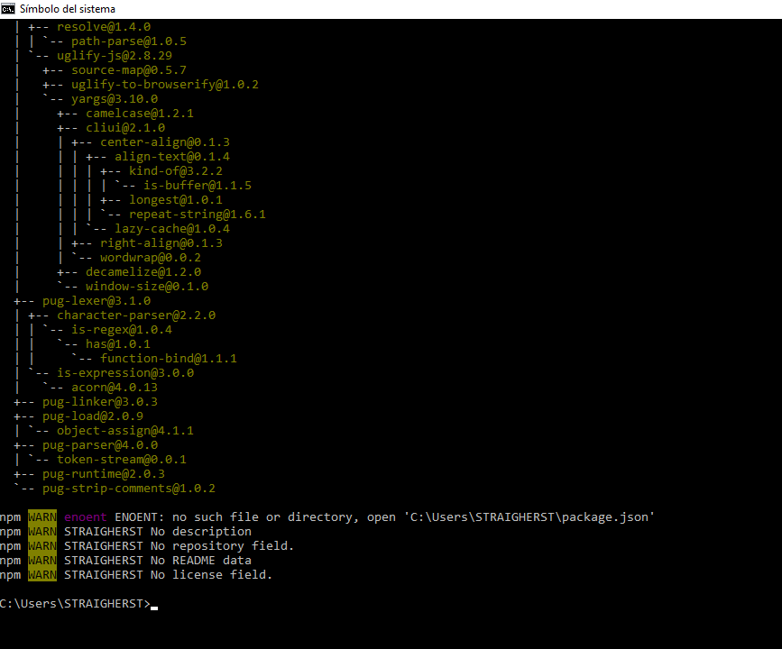
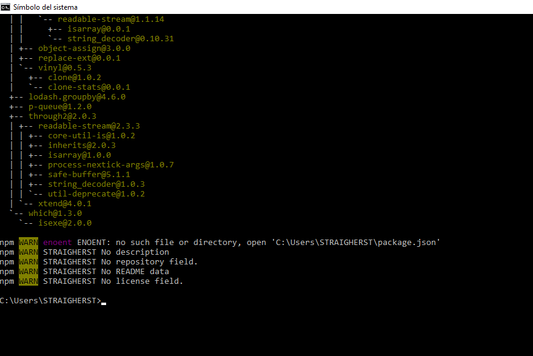

¿Qué es Yarn?
Yarn es un gestor de paquetes, permite usar y compartir codigo con otros desarrolladores de todo el mundo.
El codigo se comparte con algo llamado un paquete (a veces referido como modulo). Un paquete contiene todo el codigo que se comparte, asi como un package.json archivo que describe el paquete.
- Permite usar y compartir codigo con otros desarrolladores de todo el mundo.
- Hace esto de forma rapida, segura y confiable para no generar preocupaciones.
- Yarn utiliza sumas de comprobacion para verificar la integridad de cada paquete instalado antes de ejecutar su codigo.
- Usa un formato de archivo de bloqueo detallado, pero conciso, y un algoritmo determinista para las instalaciones, capaz de garantizar que una instalacion que trabajo en un sistema funcionara exactamente de la misma manera en cualquier otro sistema.
Tener instalado Node.js en el siguiente Link:
¿Cuáles son los pasos para instalar Yarn?


5. Cuando finalice la instalacion se mostrara asi.
¿Cómo Usar Yarn?
1. Para verificar que Yarn este bien Instalado abrimos Jade.js de la siguiente manera en el buscador de Windows con el siguiente comando
cmd y damos clic en simbolo del sistema, asi:

2. Aparecera la siguiente pantalla.

Para verificar que yarn este bien instalado escribimos en Jade la palabra Yarn damos clic y esperamos unos segundos para que nos muestre un mensaje tal cual como aparece en la siguiente imagen.

3. Para instalar Yarn globalmente el en equipo digitamos lo siguiente: npm yarn y damos clic, esperamos unos segundos y nos mostrara un mensaje, la panalla aparecera asi:

4. Como ejemplo ulilizaremos el package PUG , para esto comenzaremos escribiendo en el CMD lo siguiente: npm install pug y esperamos a que cargue para que aparezca el siguiente mensaje:

5. Luego en la misma ventana de CMD escribimos npm install gulp-install cuando finalice el proceso ya tendremos instalado Pug y Gulp

6. Hasta aqui llegan los pasos para instalar paquetes en Yarn